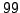
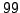
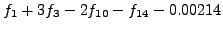
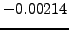

Genuine frequencies are assigned identifiers f#index#, where #index# denotes an integer number starting at  . According to the number of significant signals present in the file <infile>, COMBINE chooses a constant number of digits. For example, if the input file contains from
. According to the number of significant signals present in the file <infile>, COMBINE chooses a constant number of digits. For example, if the input file contains from  to
to  frequencies, the identifiers for genuine frequencies are f1, f2, ... If the input file contains from
frequencies, the identifiers for genuine frequencies are f1, f2, ... If the input file contains from  to  frequencies, COMBINE enumerates the genuine components f01, f02, ..., and so on. This format convention applies to the indexing of rows also.
to  frequencies, COMBINE enumerates the genuine components f01, f02, ..., and so on. This format convention applies to the indexing of rows also.
Linear combinations are denoted by the frequency identifiers of the genuine components and appear as a formula: if the frequency under consideration is, e.g., , COMBINE displays it as f01+3f02-2f10-f14-0.00214 both on the screen and in the output file. In this context,  is the frequency accuracy.
The screen output consists of a single line for each signal (i.e., for each row in the input file). COMBINE displays
By default, COMBINE generates an output file <infile>.cmb. It contains a row index in the first column, then all information of the input file in the further columns, plus three additional columns at the end:
For convenience, a second output file <infile>.gen is produced by COMBINE. It is truncated to the genuine frequencies only and contains the row index in the first column, then all the information provided in the input file, plus the frequency identifier in the last column. The columns for the reliability and the number of linear combinations within the frequency resolution are omitted. This file provides the opportunity to have all the genuine frequencies available at a glance.
Example. The sample project CombineNative contains a list of significant frequencies found in the MOST
The sample project CombineNative contains a list of significant frequencies found in the MOST (Microvariability & Oscillations of STars) photometry of
(Microvariability & Oscillations of STars) photometry of  Oph (Walker et al. 2003, 2004, 2005). According to the input file result.dat, altogether 294 formally significant signal components (sig
Oph (Walker et al. 2003, 2004, 2005). According to the input file result.dat, altogether 294 formally significant signal components (sig  5) were identified.
5) were identified.
The file result.dat.ini contains five keywords:
order 0.2 dt 26 decay 1.5 cdamp 10 sens 0.2
The dataset is 26 days long, and the frequencies are provided in cycles per day. Thus COMBINE will assume a Rayleigh frequency resolution of 0.03846 cycles per day. There is no specification for the frequency tolerance parameter (keyword tol). Thus the default setting 0 is used.
Running COMBINE by typing the command line Combine result.dat yields a welcome message on the screen.
CCCCCC bb ii CC CC bb CC ooooo m mm mm bb bbb ii n nnnn eeeee CC oo oo mm mm mm bbb bb ii nn nn ee ee CC oo oo mm mm mm bb bb ii nn nn ee ee CC oo oo mm mm mm bb bb ii nn nn eeeeeee CC oo oo mm mm mm bb bb ii nn nn ee CC CC oo oo mm mm mm bb bb ii nn nn ee ee CCCCCC ooooo mm mm mm b bbbb ii nn nn eeeee Version 1.0 ************************************************************ by Piet Reegen Institute of Astronomy University of Vienna Tuerkenschanzstrasse 17 1180 Vienna, Austria Release date: August 18, 2009
The program finds out that the input file is a seven-column SIGSPEC result file, determines the number of rows and reads the input data. Note that 295 rows correspond to 294 significant signal components, because the last row in the SIGSPEC result file contains information on the residuals (see SIGSPEC manual, p. ).
).
*** start ************************************************** File result.dat: SigSpec format rows 295 read input file
Then the search for linear combinations starts. For each row in the input file, COMBINE displays the most reliable combination detected so far.
The first four signal components are found to be genuine. Since the number of signal components is 294, COMBINE uses a three-digit format for the row indices and frequency identifiers.
row 001: f001 row 002: f002 row 003: f003 row 004: f004
For rows 5 and 6 in the input data, the screen output contains the most reliable linear combination (including the frequency accuracy) and the reliability.
row 005: 3f001-f002-2f003-f004+0.0284306 0.236585 row 006: 3f001+2f002-f004+0.0136421 0.35803
An examination of the output file result.dat.cmb shows that rows 005 and 006 end with
0.2365853347754522 1 3f001-f002-2f003-f004+0.0284306168856169 0.3580304203945811 2 3f001+2f002-f004+0.0136420746028509
These entries refer to the columns added by COMBINE. The first value is the reliability, the second one is the number of examined linear combinations, and the last column represents the linear combination itself. For row 005, there is only one linear combination available within the frequency resolution, for row 006 the number of linear combinations taken into account is 2.
Subsequently, the screen output indicates a fifth genuine frequency.
row 007: f005
The frequency in row number 8 is 0.02783 cycles per day, which is below the frequency resolution. Thus the component is considered to refer to zero frequency, and in this case, no reliability is evaluated.
row 008: 0+0.0278395
In the further rows of the input files, no more genuine frequencies are detected.
row 009: -f002+f005-0.025485 0.759005 row 010: f001-f002-f004+f005+0.0313392 0.490535 row 011: -f001+f004-0.00275538 1.26888 row 012: f001-f002-f004+f005-0.0295542 0.680494 row 013: -2f001+2f003+f004-0.00567519 0.523911 row 014: -f001+f005+0.024731 1.72772 row 015: 2f002+0.0249392 1.47442 row 016: 2f001-f004-0.0100088 1.70761 row 017: -f001+2f002-0.00217389 1.55951 row 018: f001-f002+0.00824894 3.95466 row 019: f002+f005-0.00668728 1.64167 row 020: 2f002+f003-f005-0.00199182 0.779607
It is a remarkable matter of fact that COMBINE is able to compose all 294 frequencies contained by the input file as linear combinations of no more than five genuine frequencies. However, a different parameter constellation in the configuration file result.dat.ini can produce completely different output. Note that the time consumption by COMBINE dramatically increases with the number of genuine frequencies identified. This is because more genuine frequencies increase the number of possible linear combinations over-proportionally. A list of genuine frequencies only is found in the output file result.dat.gen.
5 genuine frequencies found. Finished. ************************************************************ Thank you for using Combine! Questions or comments? Please contact Piet Reegen (reegen@astro.univie.ac.at) Bye!